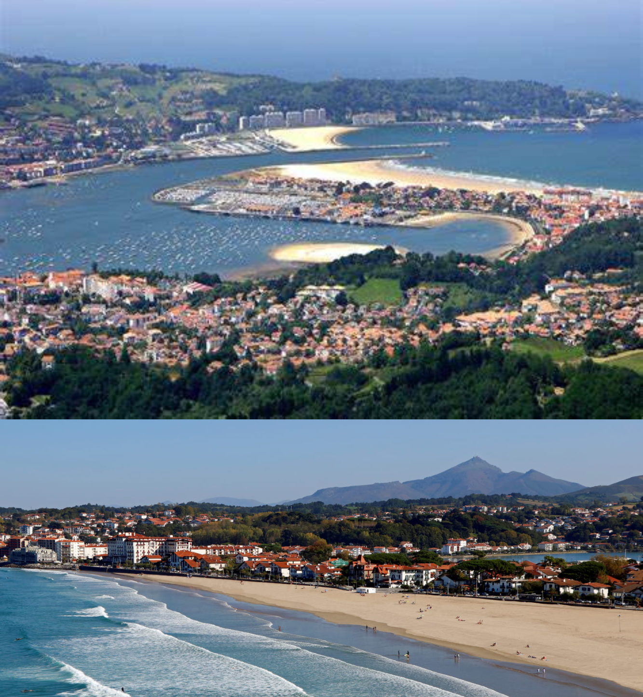
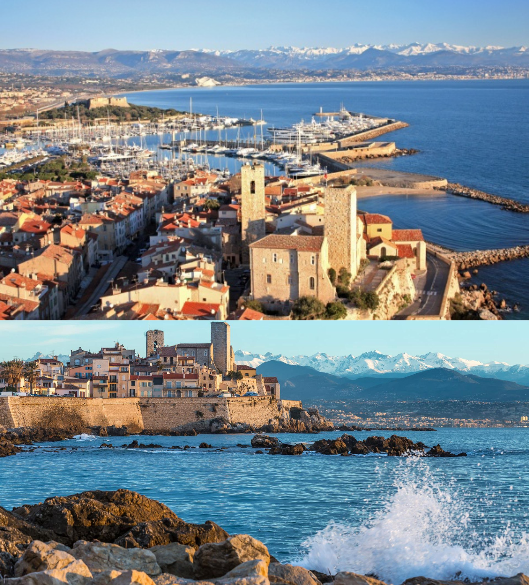
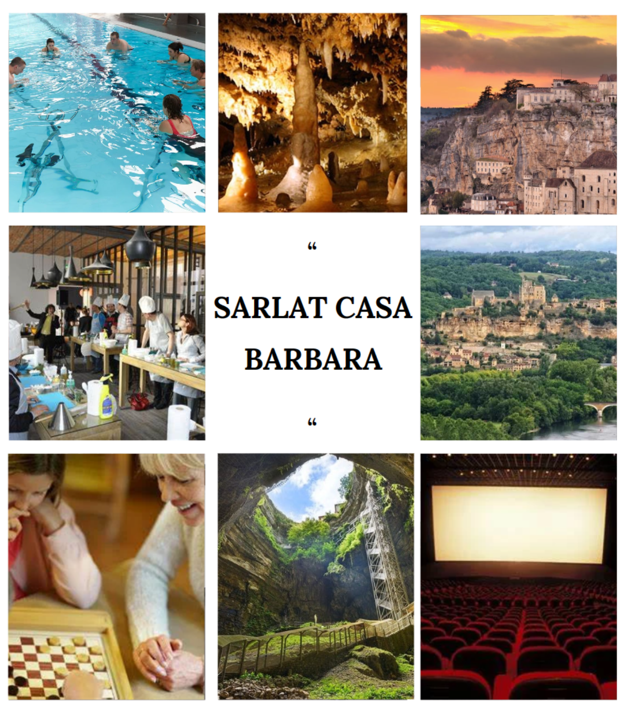
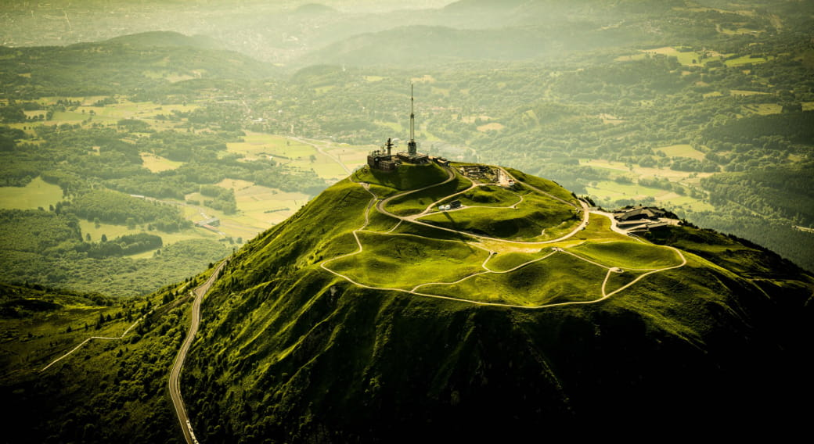
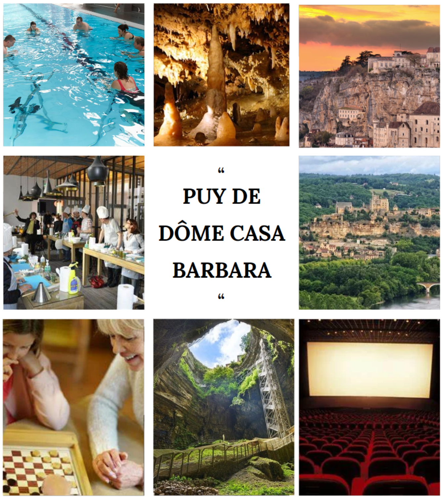

Nouveaux sites Casa-Barbara
Le projet Casa-Barbara vise à créer de nouveaux endroits agréables à la montagne et à la plage, parfaits pour des vacances relaxantes. Notre objectif est de rendre ces lieux spéciaux, confortables et respectueux de l'environnement. Nous voulons offrir aux gens âgés des séjours où ils peuvent se détendre, profiter de la nature et faire des souvenirs précieux.
Site n°1: Hendaye, Pyrénées-Atlantiques
Hendaye est une charmante ville située dans le sud-ouest de la France, juste à la frontière avec l'Espagne. Nichée entre l'océan Atlantique et les montagnes des Pyrénées, elle bénéficie d'un emplacement géographique privilégié.
La ville est célèbre pour sa magnifique plage de sable fin, qui s'étend sur plusieurs kilomètres le long de la côte, offrant aux visiteurs un cadre idéal pour se détendre et profiter du soleil. Les eaux de l'océan Atlantique sont souvent appréciées par les surfeurs et les amateurs de sports nautiques.
Le front de mer de Hendaye est animé, avec de nombreux restaurants, cafés et boutiques, où l'on peut déguster des spécialités locales et profiter de l'ambiance conviviale. La ville possède également un port de plaisance pittoresque, où l'on peut admirer les bateaux et prendre part à des activités maritimes.
Hendaye a également une histoire riche, avec des monuments et des sites historiques à découvrir, notamment le château d'Abbadia, une impressionnante demeure du XIXe siècle construite dans un style néogothique, qui offre une vue imprenable sur l'océan et les montagnes.
En somme, Hendaye est une destination balnéaire pleine de charme, alliant nature, culture et détente, ce qui en fait un lieu de vacances très apprécié par les touristes.

Activités
Un village pour senior au cœur de Hendaye, un environnement qui allie bien-être et dynamisme.
Installations de loisirs et de bien-être :
- Activités sportives : la randonnée, le golf, la gymnastique douce, la pétanque..
- Activité ludique, productive : création d’ateliers de jardinage, de bricolage et les DIY comme la création de bijoux, le recyclage ou auto-réparation de vélos.
Fabriquer eux-mêmes leurs propres produits locaux pour les résidents de Casa Barbara comme la confiture de fruit, le miel.
- Activité sociale : création de rencontre entre vacanciers, des soirées et spectacles, jeux de société.
- Sorties : organiser des pique-niques, des visites guidées dans la ville, des balades à la plage.
Site n°2: Antibes, Alpes Maritimes
Antibes est une ville pittoresque et historique située sur la Côte d'Azur, dans le sud-est de la France. Elle est réputée pour son charme méditerranéen, ses magnifiques plages, son port de plaisance animé et son riche patrimoine culturel.
L'une des caractéristiques les plus remarquables d'Antibes est son centre-ville historique, entouré de remparts datant de l'époque médiévale. Les ruelles étroites pavées regorgent de boutiques pittoresques, de cafés, de restaurants et de galeries d'art, créant une atmosphère authentique et animée. La vieille ville abrite également plusieurs monuments historiques, dont la cathédrale Notre-Dame-de-la-Platea d'Antibes et le musée Picasso, installé dans le château Grimaldi, où l'artiste a séjourné et travaillé.
Le littoral d'Antibes est parsemé de plages magnifiques, allant des criques isolées aux vastes étendues de sable fin. La plage de la Salis est l'une des plus populaires, offrant une vue imprenable sur la baie d'Antibes et le cap d'Antibes. Le cap d'Antibes lui-même est une péninsule pittoresque parsemée de villas luxueuses et de sentiers côtiers offrant des panoramas spectaculaires sur la Méditerranée.
En résumé, Antibes est une ville enchanteresse qui allie histoire, culture et beauté naturelle. Que ce soit pour explorer ses ruelles médiévales, se détendre sur ses plages de sable doré ou s'imprégner de l'atmosphère animée de son port, Antibes offre une expérience inoubliable sur la Côte d'Azur.

Activités
Un village pour sénior se trouvant a Antibes permettrais de faire prendre du repos pour ses habitant tout en gardant un cadre festif et attractif
Installations de loisirs et de bien-être :
- Visiter le Vieil Antibes: Promenez-vous dans les ruelles étroites de la vieille ville, admirez l'architecture médiévale et visitez la cathédrale Notre-Dame-de-la-Platea d'Antibes.
- Musée Picasso: Antibes abrite le musée Picasso dans le château Grimaldi, où vous pouvez découvrir une collection d'œuvres du célèbre artiste Pablo Picasso.
- Le marché provençal: Rendez-vous au marché provençal d'Antibes pour découvrir des produits locaux, des fruits frais, des légumes, des fleurs et des produits artisanaux.
- Le Fort Carré: Explorez cette impressionnante fortification du XVIe siècle qui offre une vue panoramique sur Antibes et ses environs.
- Plage de la Garoupe: Profitez du soleil et de la mer Méditerranée sur l'une des magnifiques plages d'Antibes, comme la plage de la Garoupe, réputée pour ses eaux claires et son sable fin.
- Le Cap d'Antibes: Faites une promenade le long du magnifique sentier du littoral du Cap d'Antibes pour profiter des vues spectaculaires sur la mer et les villas de luxe.
- Marineland: Si vous voyagez en famille, ne manquez pas Marineland, un parc marin où vous pouvez admirer des spectacles d'orques, de dauphins et d'otaries, ainsi que visiter un aquarium et un parc aquatique.
- Excursions en bateau: Explorez la côte depuis la mer en participant à des excursions en bateau pour découvrir les criques cachées, les îles voisines comme l'île de Lérins, ou simplement pour profiter d'une croisière au coucher du soleil.
- La gastronomie: Dégustez la cuisine méditerranéenne dans les nombreux restaurants et cafés d'Antibes, en vous régalant de plats de poissons frais, de fruits de mer et de spécialités provençales.
- Activités nautiques: Antibes offre une multitude d'activités nautiques telles que la plongée sous-marine, la voile, le kayak, le jet ski, etc. Profitez des eaux cristallines de la Côte d'Azur pour pratiquer vos activités nautiques préférées.
Site n°3: Sarlat-La-Caneda, Dordogne
Sarlat-la-Canéda, située dans le sud-ouest de la France, est une ville médiévale emblématique de la région de la Dordogne. Son centre historique pittoresque est célèbre pour son architecture préservée, ses ruelles pavées et ses maisons en pierre dorée.
La vieille ville de Sarlat est un véritable joyau architectural, avec ses bâtiments médiévaux bien conservés, ses places animées et ses marchés colorés. Les monuments remarquables incluent la cathédrale Saint-Sacerdos, l'église Sainte-Marie et la maison de La Boétie, qui témoignent de l'histoire riche et fascinante de la ville.
Sarlat est également réputée pour sa gastronomie, mettant en valeur les délices de la cuisine périgourdine. Les marchés de produits locaux offrent une variété de spécialités, notamment le foie gras, les truffes, les noix et les vins de la région. Les restaurants de la ville proposent une cuisine traditionnelle raffinée, offrant aux visiteurs une véritable expérience culinaire.
Outre son patrimoine culturel et gastronomique, Sarlat est entourée d'une nature préservée, avec des paysages de campagne verdoyante, de vallées pittoresques et de rivières sinueuses. Les amateurs de plein air peuvent profiter de nombreuses activités telles que la randonnée, le canoë-kayak et la découverte des grottes préhistoriques de la région.
En résumé, Sarlat-la-Canéda est une destination incontournable pour les amateurs d'histoire, de gastronomie et de nature, offrant une expérience unique au cœur de la Dordogne.

Activités
Un village pour seniors à Sarlat pourrait offrir un environnement enrichissant et stimulant pour ses résidents.
Installations de loisirs et de bien-être :
-Salles polyvalentes pour des activités sociales, des cours de loisirs et des événements.
-Centre de remise en forme équipé d'appareils adaptés aux seniors
-Piscine intérieure chauffée avec des cours d'aquagym et des sessions de thérapie aquatique.
-Sentiers de promenade et de randonnée aménagés dans les espaces verts du village / Visite spéléologie
-Activités en plein air : Organiser des randonnées, des promenades en vélo ou des pique-niques dans la campagne environnante pour permettre aux résidents de profiter de la nature.
-Activités sociales : Organiser des soirées à thème, des jeux de société, des séances de cinéma ou des concerts pour favoriser les interactions sociales entre les résidents.
-Culturelles / Productif : Organiser des visites guidées des sites historiques de Sarlat, tels que la vieille ville médiévale, les châteaux environnants et les musées locaux, proposer des ateliers d'art et d'artisanat, tels que la peinture, la poterie ou la sculpture, pour permettre aux résidents de développer leur créativité.
-Cours de cuisine : Organiser des cours de cuisine mettant en valeur les spécialités de la région, où les résidents peuvent apprendre à préparer des plats traditionnels

Site n°3: Puy-de-Dôme, Auvergne-Rhône-Alpes
La ville du Puy-de-Dôme est en fait Clermont-Ferrand, qui est la préfecture du département du Puy-de-Dôme en région Auvergne-Rhône-Alpes, en France. Située au cœur de la chaîne des Puys, elle est célèbre pour son paysage volcanique spectaculaire, notamment le Puy de Dôme, un volcan dormant qui domine la ville.
Clermont-Ferrand est également connue pour son industrie du pneumatique, avec le siège mondial du groupe Michelin. La ville a une riche histoire, avec des traces de peuplement remontant à l'Antiquité, et elle abrite également plusieurs sites historiques et culturels, tels que la cathédrale gothique de Clermont-Ferrand, la basilique romane Notre-Dame-du-Port, et le musée d'art Roger-Quilliot.

Activités
Un village pour seniors à Sarlat pourrait offrir un environnement enrichissant et stimulant pour ses résidents.
Installations de loisirs et de bien-être :
-Salles polyvalentes pour des activités sociales, des cours de loisirs et des événements.
-Centre de remise en forme équipé d'appareils adaptés aux seniors
-Piscine intérieure chauffée avec des cours d'aquagym et des sessions de thérapie aquatique.
-Sentiers de promenade et de randonnée aménagés dans les espaces verts du village / Visite spéléologie
-Activités en plein air : Organiser des randonnées, des promenades en vélo ou des pique-niques dans la campagne environnante pour permettre aux résidents de profiter de la nature.
-Activités sociales : Organiser des soirées à thème, des jeux de société, des séances de cinéma ou des concerts pour favoriser les interactions sociales entre les résidents.
-Culturelles / Productif : Organiser des visites guidées des sites historiques de Sarlat, tels que la vieille ville médiévale, les châteaux environnants et les musées locaux, proposer des ateliers d'art et d'artisanat, tels que la peinture, la poterie ou la sculpture, pour permettre aux résidents de développer leur créativité.
-Cours de cuisine : Organiser des cours de cuisine mettant en valeur les spécialités de la région, où les résidents peuvent apprendre à préparer des plats traditionnels

Pour plus d'informations concernant les projets Casa-Barbara, n'hésitez pas à aller visiter la page Web ou à
contacter les service de renseignements Casa-Barbara à l'adresse suivante: dutoit.baptiste@gmail.com
Informations concernant le développeur